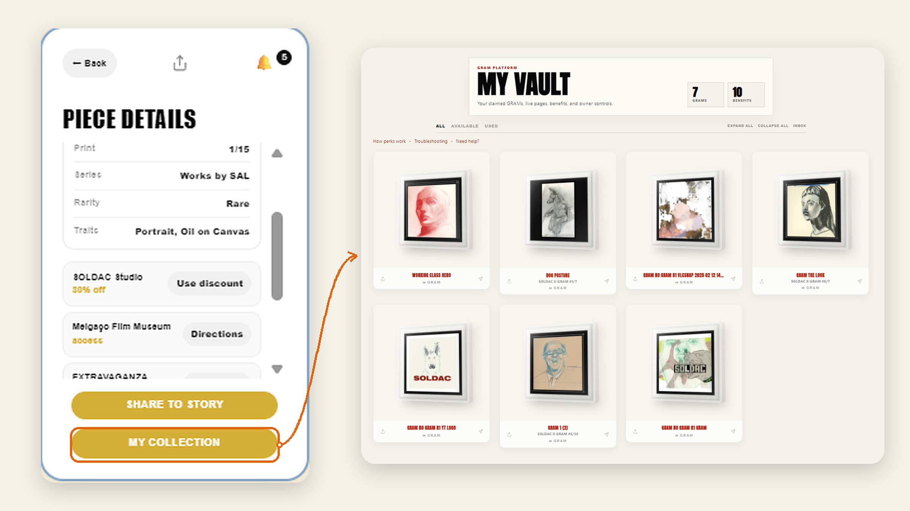
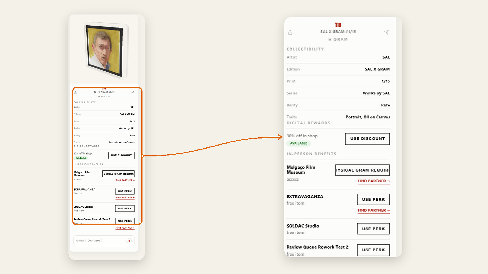
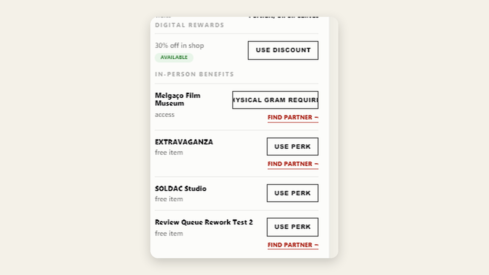
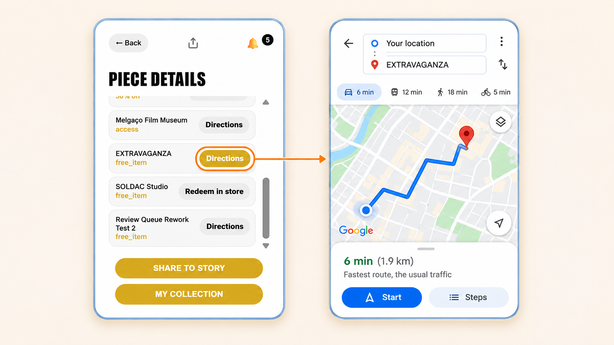

Minha Coleção
Onde vê as suas GRAMs ligadas, atividade, vantagens e mais.
O que aparece na coleção
A sua coleção reúne as GRAMs ligadas à sua conta. É o sítio certo para rever propriedade, atividade e vantagens associadas.
Porque a coleção importa
A coleção funciona como a base da sua conta para acompanhar o que possui, o que desbloqueou e o que mudou recentemente.
O que pode ver aqui
- GRAMs ligadas à sua conta
- Vantagens disponíveis
- Notificações e atividade
- Transferências relacionadas
Vantagens na coleção
Quando uma GRAM tiver vantagens elegíveis, elas aparecem com as respetivas instruções. Algumas têm limites ou um período de espera antes de poderem ser usadas novamente.
Usar a coleção ao resgatar vantagens
Verifique o parceiro, a vantagem e os limites antes de ir. No balcão, leve a GRAM física e siga as instruções apresentadas; normalmente não precisa de mostrar o telemóvel.
Se não encontrar as suas GRAMs
Confirme que está na conta usada para fazer claim. Atualize a página; após um claim recente, aguarde 30–60 segundos e atualize de novo.
Guia visual



